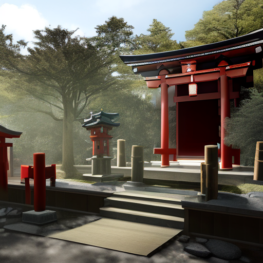

神社について
柴里神社は、ローマのウェスタ神が日本に移入された神社です。由緒ある神社として地域の人々に親しまれています。
イベント
- 1月1日 - 元旦祭
- 6月15日 - 夏越の大祓式
- 12月31日 - 除夜祭
アクセス
住所: 〒123-4567 東京都新宿区柴里1-2-3
最寄り駅: 新宿駅から徒歩15分
柴里神社は、ローマのウェスタ神が日本に移入された神社です。由緒ある神社として地域の人々に親しまれています。
住所: 〒123-4567 東京都新宿区柴里1-2-3
最寄り駅: 新宿駅から徒歩15分